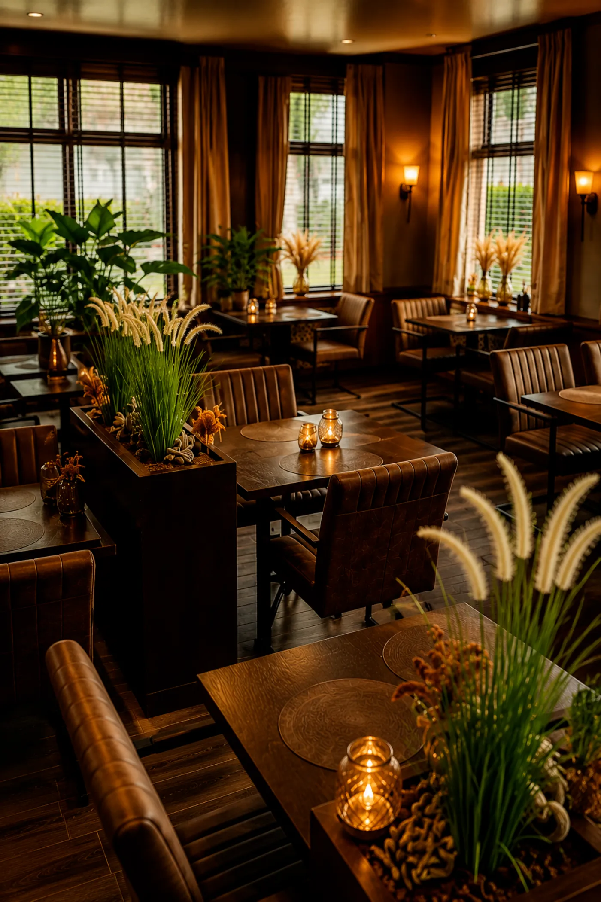
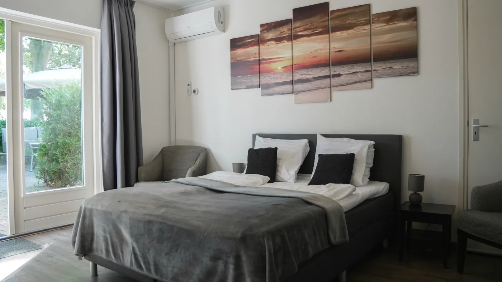
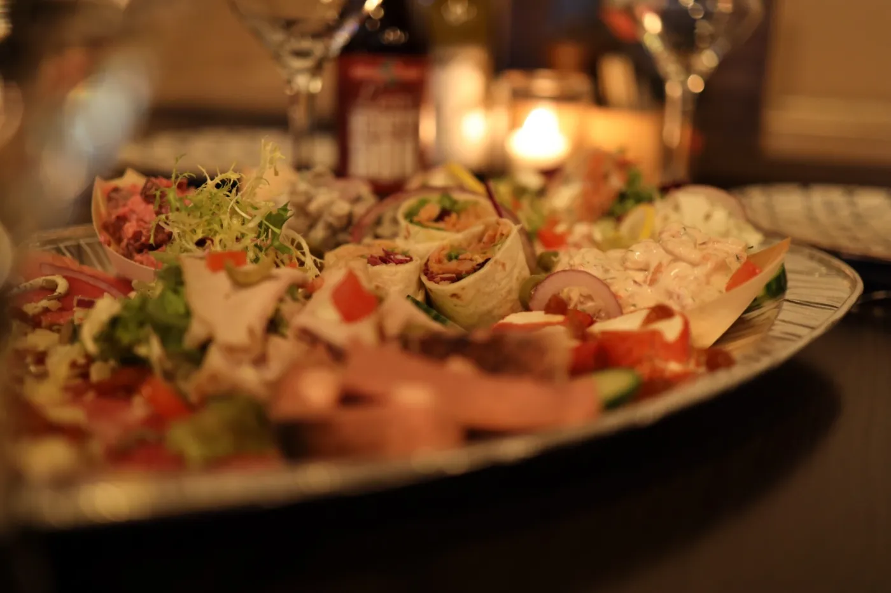
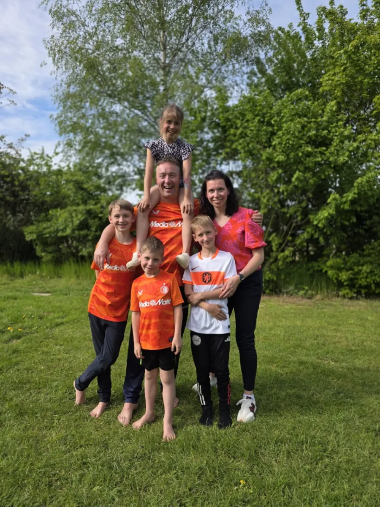

Soetendaal 5, Vierlingsbeek
De Vier Linden
Bistro en Bed & Breakfast. Wij heten u graag welkom: voor een lekkere hap, een goed glas wijn of een paar nachten in een van onze negen studio's.
Bistro open vanaf 18.00 uur, binnenkomen tot 19.00 uur
Een huiselijke, gemoedelijke bistro
We heten jullie van harte welkom in onze huiselijke en gemoedelijke bistro. Een plek waar je ongedwongen kunt binnenlopen voor een lekkere hap, een goed glas wijn, en vooral een fijne, ontspannen sfeer.
We kijken er enorm naar uit om jullie te ontvangen. Tot snel!
Openingstijden bistro
We zijn geopend vanaf 18.00 uur. Tot 19.00 uur kunt u binnenkomen, daarna sluit onze keuken.
Laagseizoen t/m 22 maart
- Maandag
- gesloten
- Dinsdag
- gesloten
- Woensdag
- gesloten
- Donderdag
- vanaf 18.00
- Vrijdag
- vanaf 18.00
- Zaterdag
- vanaf 18.00
- Zondag
- gesloten
Hoogseizoen 22 maart t/m 1 oktober
- Maandag
- vanaf 18.00
- Dinsdag
- vanaf 18.00
- Woensdag
- vanaf 18.00
- Donderdag
- vanaf 18.00
- Vrijdag
- vanaf 18.00
- Zaterdag
- vanaf 18.00
- Zondag
- gesloten
Extra sluitingsdagen
- 31 december t/m 9 januari
- 11 t/m 20 februari

Bed & Breakfast De Vier Linden
Negen unieke, luxe studio's, elk met een eigen kitchenette en badkamer.
Of u nu komt voor een ontspannen vakantie, een fietstocht, een wandeling langs het Pieterpad of een zakenreis: wij heten u van harte welkom. Onze studio's zijn ontworpen met comfort en stijl in gedachten, zodat u zich direct thuis voelt.
Start uw dag met ons ontbijt, dat met zorg voor u wordt bereid. En als het weer het toelaat, ontspant u op het terrasje bij uw kamer, omringd door de natuur.
Bel voor vragen of boeken: 06 33 05 76 72- 9 studio's met kitchenette en eigen badkamer
- Bedden opgemaakt en handdoeken klaargelegd bij aankomst
- Ontbijt met zorg bereid
- Terrasje bij uw kamer
- Toeristenbelasting al inbegrepen
- Inchecken vanaf 15.30 uur, uitchecken tot 10.30 uur

Lekkers voor thuis: een zorgeloze Kerst 2026
Bestel onze proeverij voor thuis op 24, 25 en 26 december. Waarom zelf koken als het ook makkelijker kan?
- Voorgerecht prachtig voor u opgemaakt
- Brood vers afgebakken en klaar om te serveren
- Soep eenvoudig op te warmen
- Hoofdgerecht 15 minuten in een voorverwarmde oven van 180 graden
- Dessert mooi gepresenteerd
Afhalen op 24, 25 en 26 december tussen 14.30 en 15.30 uur. Bestellen kan tot en met 15 december. We nemen een beperkt aantal bestellingen per dag aan, dus bestel op tijd: vol is vol. Allergieën of speciale wensen? Zet ze in het opmerkingenveld bij uw bestelling.
In de echte site komt hier de webshop: online bestellen en betalen met iDEAL, afhalen of bezorgen in het bezorggebied.

Welkom bij De Vier Linden
Wij zijn een familiebedrijf waar gastvrijheid, gezelligheid en lekker eten centraal staan.
Samen zorgen we ervoor dat onze gasten zich bij ons snel thuis voelen. In onze bistro kun je in een ongedwongen en huiselijke sfeer genieten van lekker eten. En wil je er even helemaal tussenuit? Dan ben je van harte welkom in onze B&B voor een ontspannen verblijf.
We houden van persoonlijk contact, een fijne sfeer en vooral: doen waar we blij van worden en dat delen met onze gasten.
Of je nu komt eten, overnachten of allebei: voel je welkom!Wouter, Yvonne, Levin, Mitch, Chloë en Wout
Reserveren
Reserveer telefonisch, via WhatsApp of met het formulier. U krijgt van ons bericht of uw reservering mogelijk is; we streven ernaar dit binnen 24 uur te doen. Uw reservering is definitief nadat u een bevestiging van ons heeft gekregen.
Voor vandaag reserveren? Dat kan alleen telefonisch: 0478 - 63 16 37 of 06 33 05 76 72.
Contact en route
De Vier LindenSoetendaal 5
5821 BL Vierlingsbeek
- Bistro: 0478 - 63 16 37
- Mobiel en WhatsApp: 06 33 05 76 72
- restaurantdevierlinden@live.nl